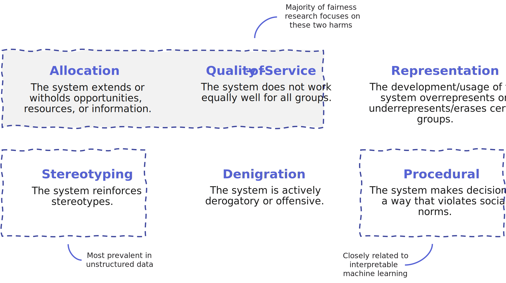
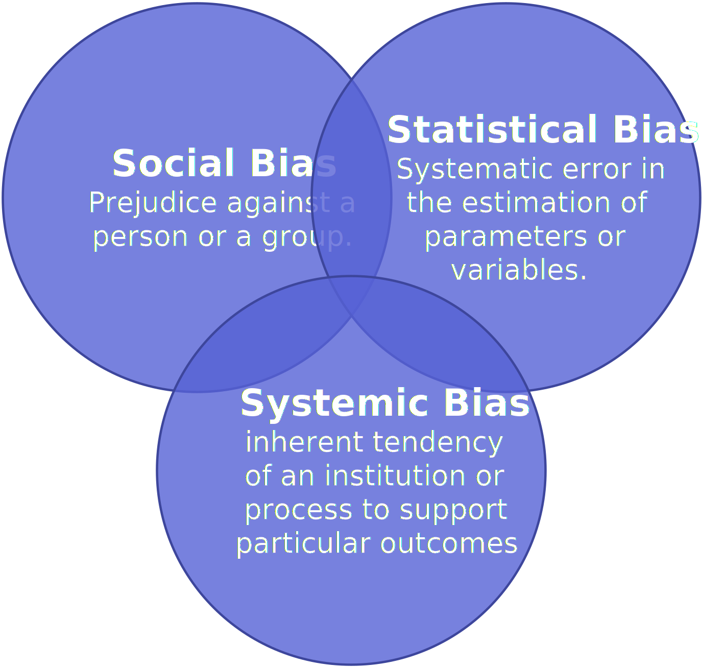
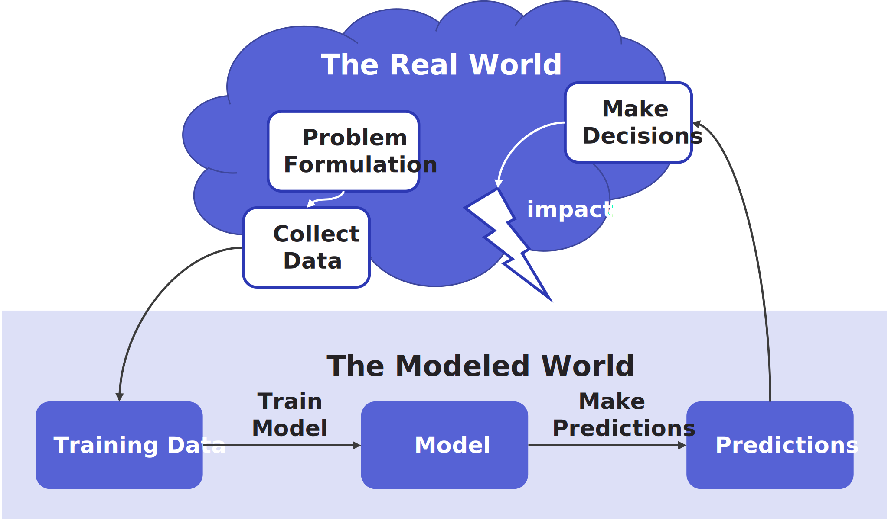

Algorithmic Fairness
Contents
Algorithmic Fairness#
In recent years, there has been an increasing awareness amongst both the public and scientific community that algorithmic systems can reproduce, amplify, or even introduce unfairness or injustice in our societies. From automated resume screening tools that favor men over women to facial recognition systems that fail disproportionately for darker-skinned women. In this chapter, we provide an introduction to different types of fairness-related harms and the biases that cause them.
Unfair Machines#
Machine learning applications often make predictions about people. For example, algorithmic systems may be used to decide whether a resume makes it through the first selection round, judge the severity of a medical condition, or determine whether somebody will receive a loan. Since these systems are usually trained on large amounts of data, they have the potential to be more consistent than human decision-makers with varying levels of experience. For example, consider a resume screening process. In a non-automated scenario, the likelihood of getting through the resume selection round can depend on the personal beliefs of the recruiter who happens to judge your resume. On the other hand, the predictions of an algorithmic resume screening system can be learned from the collective judgment of many different recruiters.
However, the workings of a machine learning model heavily depend on how the machine learning task is formulated and which data is used to train the model. Consequently, prejudice and systemic bias against particular groups can seep into the model at each step of the development process. For example, if in the past a company has hired more men than women, this will be reflected in the training data. A machine learning model trained on this data is likely to pick up this pattern.
Example: Amazon’s Resume Screening Model
In 2015, Amazon tried to train a resume screening model. In order to avoid biased predictions, the model did not explicitly take into account the applicant’s gender. However, it turned out that the model penalized resumes that included terms that suggested that the applicant was a woman. For example, resumes that included the word “women’s” (e.g., in “women’s chess club captain”) were less likely to be selected. Although Amazon stressed the tool “was never used by Amazon recruiters to evaluate candidates”, this incident serves as an example of how machine learning models can, unintentially, replicate undesirable relationships between a sensitive characteristic and a target variable.
Notably, the characteristics that could potentially make algorithmic systems desirable over human-decision making, also amplify fairness-related risks. One prejudiced recruiter can judge a few dozen resumes each day, but an algorithmic system can process thousands of resumes in the blink of an eye. If an algorithmic system is biased in any way, harmful consequences will be structural and can occur at a large scale. Even if predictions do not directly consider individuals, people can be unfairly impacted 1. For example, a machine learning model that predicts house valuations can influence the materialized sale prices. If some neighborhoods receive much lower house price predictions than others, this may disproportionately affect some groups over others.
Discrimination and bias of algorithmic systems is not a new problem. Well over two decades ago, Friedman and Nissenbaum2 analyzed the fairness of computer systems. However, with the increasing use of algorithmic systems, it has become clear that the issue is far from solved. Researchers from a range of disciplines have started working on unraveling the mechanisms by which algorithmic systems can undermine fairness and how these risks can be mitigated.
This has given rise to the research field of algorithmic fairness: the idea that algorithmic systems should behave or treat people fairly, i.e., without discrimination on the grounds of sensitive characteristics such as age, sex, disability, ethnic or racial origin, religion or belief, or sexual orientation. Here, sensitive characteristic refers to a characteristic of an individual such that any decisions based on this characteristic are considered undesirable from an ethical or legal point of view.
Note that this definition of algorithmic fairness is very broad. This is intentional. The concept applies to all types of algorithmic systems, including different flavors of artificial intelligence (e.g., symbolic approaches, expert systems, and machine learning), but also simple rule-based systems.
Types of Harm#
The exact meaning of “behaving or treating people fairly” depends heavily on the context of the algorithmic system. There are several different ways in which algorithmic systems can disregard fairness. In particular, we can distinguish between the following types of fairness-related harms3.
Allocation harm can be defined as an unfair allocation of opportunities, resources, or information. In our resume selection example, allocation harm can occur when some groups are selected less often than others, e.g., the algorithm selects men more often than women.
Quality-of-service harm occurs when a system disproportionately fails for certain (groups of) people. For example, a facial recognition system may misclassify black women at a higher rate than white men 4 and a speech recognition system may not work well for users whose disability impacts their clarity of speech 5.
Stereotyping harm occurs when a system reinforces undesirable and unfair societal stereotypes. Stereotyping harms are particularly prevalent in systems that rely on unstructured data, such as natural language processing and computer vision systems. The reason for this is that societal stereotypes are often deeply embedded in text corpora and image labels. For example, an image search for “CEO” may primarily show photos of white men.
Denigration harm refers to situations in which algorithmic systems are actively derogatory or offensive. For example, an automated tagging system may misclassify people as animals and a chatbot might start using derogatory slurs.
Representation harm occurs when the development and usage of algorithmic systems over- or under-represents certain groups of people. For example, some racial groups may be overly scrutinized during welfare fraud investigations or neighborhoods with a high elderly population may be ignored because data on disturbances in the public space (such as potholes) is collected using a smartphone app. Representation harm can be connected to allocation harms and quality-of-service harms.
Procedural harm occurs when decisions are made in a way that violates social norms (see e.g., Rudin et al.6). For example, penalizing a job applicant for having more experience can violate social norms. Procedural harm is not limited to the prediction-generating mechanisms of the machine learning model but can be extended to the development and usage of the system. For example, is it communicated clearly that an algorithmic decision is made? Do data subjects receive a meaningful justification? Is it possible to appeal a decision?
Note that these types of harm are not mutually exclusive. For example, over- or underrepresentation of particular groups can influence the predictive performance of the model, resulting in quality-of-service harm. Additionally, this list is not complete – there may be other context and application-specific harms.
Biases#
Anybody who has ever attempted to build a machine learning model will know that machine learning systems are an accumulation of design choices that shape what the final model will look like. From high-level decisions related to the goal of the model to a plethora of detailed choices. Will you use one-hot-encoding for that categorical feature in your data set? Which hyperparameter settings are you going to evaluate? Which data is deemed of sufficiently high quality to train the model? These puzzles are part of what makes machine learning development interesting and creative work. However, choosing the ‘best’ option implicitly involves a value judgment. This has important implications. In the context of algorithmic fairness, a major concern revolves around different forms of biases that can seep into a machine learning system through various design choices. In this section, we will explore several of these biases as sources of fairness-related harm.
What is Bias?#
But first, let us define more precisely what we mean when we talk about ‘bias’. In the dictionary, bias is defined as “a systematic and disproportionate tendency towards something”. It can refer to many different things, ranging from social biases related to prejudice to statistical biases that are technical.
Statistical Bias#
If you have ever done an introductory course on statistics or machine learning theory, you have almost certainly come across statistical bias. In this context, ‘bias’ refers to a systematic error in the estimation of parameters or variables. For example, you may have come across a naive estimation of sample variance in one of your statistics classes, which is a provably biased estimate of the true variance of a population. In other cases, statistical bias is used to refer to biases in the data collection process that compromise the accuracy of an estimate. For example, respondents of a Twitter poll are rarely a random sample of the population. Bias is also used to refer to systematic errors caused by assumptions of an estimator. In the context of machine learning algorithms, this type of bias is often discussed with the bias-variance trade-off. For example, some machine learning algorithms can only learn linear relationships between features, whereas the true underlying data distribution exhibits more complex relationships, resulting in an underfitting model.
Biases in a Machine Learning Development Process#
Many different types of bias can result in fairness-related harm. Most of these issues arise at the intersections of social or systemic and statistical bias. In the remainder of this section, we will dive more deeply into different types of biases during data collection and modeling.
Warning
The list of biases discussed in this chapter is by no means exhaustive. Moreover, reality is messy, and in practice biases are much harder to precisely dissect than suggested in research papers. In the algorithmic fairness literature, several of these biases are known under various different names.
Historical Bias: Social Biases Encoded in Data#
When it comes to bias, one stage of the development process is arguably the most notorious: data collection and processing. While bias in = bias out only scratches the surface of fairness issues (more on that later), data sets are important sources of fairness-related harm.
One of the seemingly most obvious ways in which data can be biased is when social biases are explicitly encoded in data, typically in the form of an association between a sensitive feature and the target variable. If not accounted for, a machine learning model will reproduce these biases, resulting in unfair outcomes. Generally speaking, historical bias comes in two flavors.
![A graphical representation of different types of historical bias. The picture contains three primary objects; 'potential - one's inate potential to become a data scientist', 'construct - employee quality', and 'measurement - hiring decisions'. An arrow is drawn between 'potential' and 'construct', which is annotated with '(un)just life bias, innate potential is not equal to employee quality'. A second arrow is drawn between 'construct' and 'measurement', which is annotated with 'measurement bias, employee quality is not equal to hiring decisions'.](../_images/historicalbias.svg)
First, historical bias can arise due to social or statistical biases in historical decision-making, resulting in measurement bias. Generally speaking, measurement bias occurs when the method of observation results in systematic errors. When measurement bias is related to a sensitive feature, such as gender or race, it can be a source of downstream model unfairness. For example, a company may have historically hired more men than women for technical positions due to social bias. In this case, historical hiring decisions are a biased proxy for the actual suitability of the applicant. A model trained on historical decisions will likely reproduce the association. Another example can be found in fraud detection. A fraud analyst might overly scrutinize some groups over others. Higher rates of testing will result in more positives, confirming the analysts biased beliefs and skewing the observed base rates. Unaccounted for, the skewed numbers will be reproduced by the machine learning model. Inaccurate stereotypes can also be embedded in texts, images, and annotations produced by people, resulting in systems that reinforce these stereotypes. It is important to emphasize that simply removing the sensitive feature is unlikely to mitigate this type of bias: a sufficiently accurate model will simply reproduce the association.
A second type of historical bias occurs when the data is a good representation of reality, but reality is biased, which we will refer to as life’s bias. An alternative explanation of the observed historical bias in the hiring example is actual differences in suitability caused by structural inequalities in society. For example, people from lower socioeconomic backgrounds may have had fewer opportunities to get a good education, making them less suitable for jobs where such education is required for job performance. Similarly, while stereotypes can be very inaccurate at an individual level, social and cultural factors can influence how we organize our societies. For example, many occupations are highly gendered, resulting in differences in applicant pools.
In practice, it is impossible to distinguish between these two types of historical bias from observed data alone. For example, we cannot know the true underlying fraud rate if we only investigate data produced by a biased fraud detection methodology. Moreover, when social biases are involved, cases of measurement bias and structural inequality often co-occur. However, the distinction is important: while measurement bias can be mitigated by thoughtful and high-quality data collection, meaningfully addressing structural injustice in the context of a single machine learning model may not be feasible.
Disparate Informativeness: Representation Bias and Predictive Bias#
A different set of data biases are related to the extent to which the data is sufficiently informative to make accurate predictions for all sensitive groups.
A data set can be less informative for a sensitive group if fewer data points are available. In particular, representation bias occurs when some groups are underrepresented in the data 7. A machine learning model might not generalize well for underrepresented groups, causing allocation harm or quality-of-service harm. Representation bias is especially risky when the data distribution of minority groups differs substantially from the majority group. An often-cited example of representation bias was uncovered by Buolamwini and Gebru4. They found that the data sets that were used to train commercial facial recognition systems contained predominantly images of white men. Consequently, the models did not generalize well to people with dark skin, especially women.
Representation bias is closely related to selection bias, a statistical bias that occurs when the data collection or selection results in a non-random sample of the population. If not taken into account, conclusions regarding the studied effect may be wrong. For example, young healthy people may be more likely to volunteer for a vaccine trial than less healthy older people. As a result, conclusions about the side effects may not be representative of the whole population. Notably, representation bias can occur even when a sample is truly selected at random, as there may not be sufficient information available for minority groups.
An underlying cause of representation bias are blind spots of the collectors. For example, a data science team that consists solely of women is less likely to notice that men are not well represented in the data than a more diverse team. Additionally, some data is easier to get than others. For example, collecting data on the interests of young adults, who often spend hours each day scrolling through their social media feeds, is much easier compared to the interests of elderly people who are generally not as active online.
The informativeness of the data can also be affected by predictive bias, which occurs when the informativeness of the features differs across groups. In this case, it is not so much the amount of data that is relevant, but the quality of that data for a predictive task. For example, women face different risk factors for heart disease compared to men, including pregnancy and menopause-induced factors. If we were to build a machine learning model that does not take into account these features, the model is likely to be less accurate for women than it is for men.
Representation bias is relatively easy to solve by getting more data. Additionally, data scientists can leverage techniques that were designed to deal with sampling errors, such as weighting instances. However, one should be cautious to not overburden already marginalized groups. Moreover, it is hard to justify harming other values, such as privacy and autonomy, in your quest for more data. For example, after IBM released its “diverse data set”, it became clear that the data set contained millions of photos that were retrieved from the internet without consent. Similarly, researchers attempting to increase the predictive performance of facial recognition systems for transgender persons, proceeded to collect a set of Youtube video links of transgender individuals, without informing them. Predictive bias, on the other hand, cannot be solved by collecting more data points, only by collecting better data. For example, we may carefully consider which additional features should be added to the model by consulting domain experts.
Aggregation bias#
Building a machine learning model includes many different choices, ranging from the class of machine learning algorithms that are considered to their hyperparameter settings. Different models may have different consequences related to fairness, depending on the task at hand.
Aggregation bias occurs when a single model is used for groups that have distinct data distributions 7. If not accounted for, it may lead to a model that does not work well for any of the subgroups. For example, it is known that the relationship between hemoglobin levels (HbA1c) and blood glucose levels differs greatly across genders and ethnicities 7. If these differences are not taken into account, a model that only uses a single interpretation of HbA1c will likely not work well for any of these groups. In combination with representation bias, it can lead to a model that only works well for the majority population.
Aggregation bias is related to the problem of underfitting. Machine learning can be seen as a compression problem that produces a mapping between input features and output variables. Some information is inherently lost because of the chosen mapping 8. In particular, some model classes may not be able to adequately capture the different data distributions. Such an oversimplified model may come at the cost of predictive performance for minority groups.
Summary
Unfair Machines
Machine learning models can reproduce, amplify, and even introduce unfairness. This has given rise to the research field of algorithmic fairness: the idea that algorithmic systems should behave or treat people without discrimination on the grounds of sensitive characteristics.
Types of harm
There are different ways in which algorithmic systems can disregard fairenss, including allocation harm, quality-of-service harm, stereotyping harm, denigration harm, representation harm, and procedural harm.
Biases as Sources of Unfairness
Social, systemic, and statistical biases can influence the machine learning development process, causing fairness-related harm.
Social biases can be encoded in data sets in the form of measurement bias and structural inequalities in society.
Representation bias and predictive bias affect the informativeness of data across different sensitive groups, which can result in disparate predictive performance.
During modelling, aggregation bias can result in a model that does not work well for sensitive groups that have distinct data distributions.
References#
- 1
Solon Barocas, Moritz Hardt, and Menaka Narayanan. Fairness and machine learning: limitations and opportunities. 2022. Retrieved from https://fairmlbook.org.
- 2
Batya Friedman and Helen Nissenbaum. Bias in computer systems. ACM Transactions on Information Systems, 14(3):330–347, July 1996. URL: https://doi.org/10.1145/230538.230561, doi:10.1145/230538.230561.
- 3
Michael A Madaio, Luke Stark, Jennifer Wortman Vaughan, and Hanna Wallach. Co-Designing Checklists to Understand Organizational Challenges and Opportunities around Fairness in AI. Chi 2020, pages 1–14, 2020.
- 4(1,2)
Joy Buolamwini and Timnit Gebru. Gender shades: intersectional accuracy disparities in commercial gender classification. In Conference on fairness, accountability and transparency, 77–91. 2018.
- 5
Anhong Guo, Ece Kamar, Jennifer Wortman Vaughan, Hanna M. Wallach, and Meredith Ringel Morris. Toward fairness in AI for people with disabilities: A research roadmap. CoRR, 2019. URL: http://arxiv.org/abs/1907.02227, arXiv:1907.02227.
- 6
Cynthia Rudin, Caroline Wang, and Beau Coker. The age of secrecy and unfairness in recidivism prediction. Harvard Data Science Review, 3 2020. https://hdsr.mitpress.mit.edu/pub/7z10o269. URL: https://hdsr.mitpress.mit.edu/pub/7z10o269, doi:10.1162/99608f92.6ed64b30.
- 7(1,2,3)
Harini Suresh and John V. Guttag. A framework for understanding unintended consequences of machine learning. 2020. arXiv:1901.10002.
- 8
Roel Dobbe, Sarah Dean, Thomas Gilbert, and Nitin Kohli. A broader view on bias in automated decision-making: reflecting on epistemology and dynamics. arXiv preprint arXiv:1807.00553, 2018.
Social and Systemic bias#
In everyday language, bias is typically used to refer to prejudice against a person or a group. To avoid confusion, we will generally refer to this type of bias as social bias. Social bias is a form of cognitive bias: a systematic error in rational thinking that can affect judgment and decision-making. Several theoretical explanations of cognitive biases exist. In particular, the biases are thought to be the result of the limitations of the information-processing capabilities of the human brain. From an evolutionary perspective, cognitive biases might have been useful because they allow people to make quick decisions in critical scenarios. As a hunter-gatherer, you would probably rather be safe than sorry when encountering an unknown group of other humans. However, shortcuts and heuristics often come at the cost of the quality of decisions. In particular, stereotypes formed by social bias can be overgeneralized and inaccurate, especially on an individual level. When people act on social biases, they can result in discriminatory practices. Social bias is not limited to human actors and can also be embedded in institutions, in which case it is typically referred to as systemic bias or institutional bias.